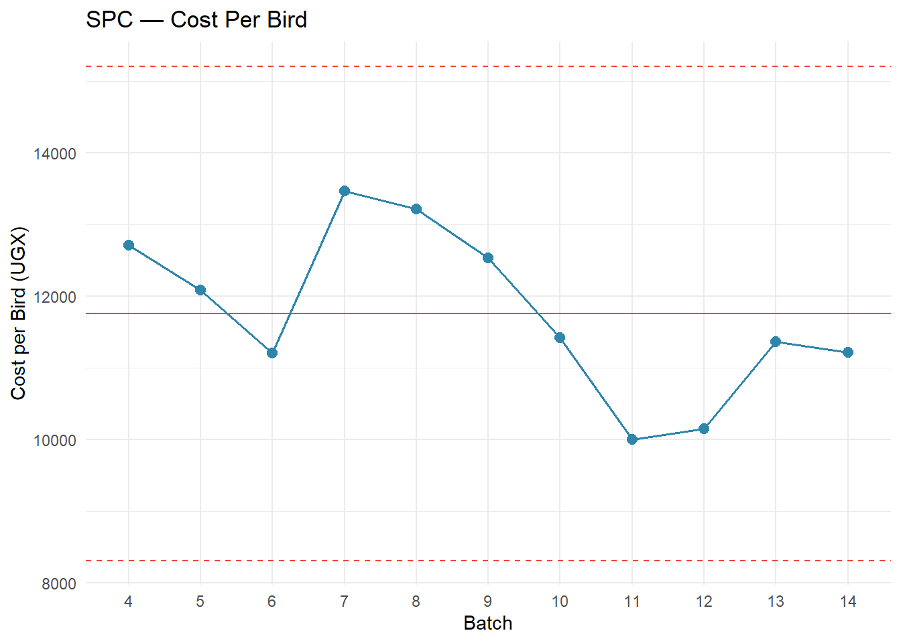
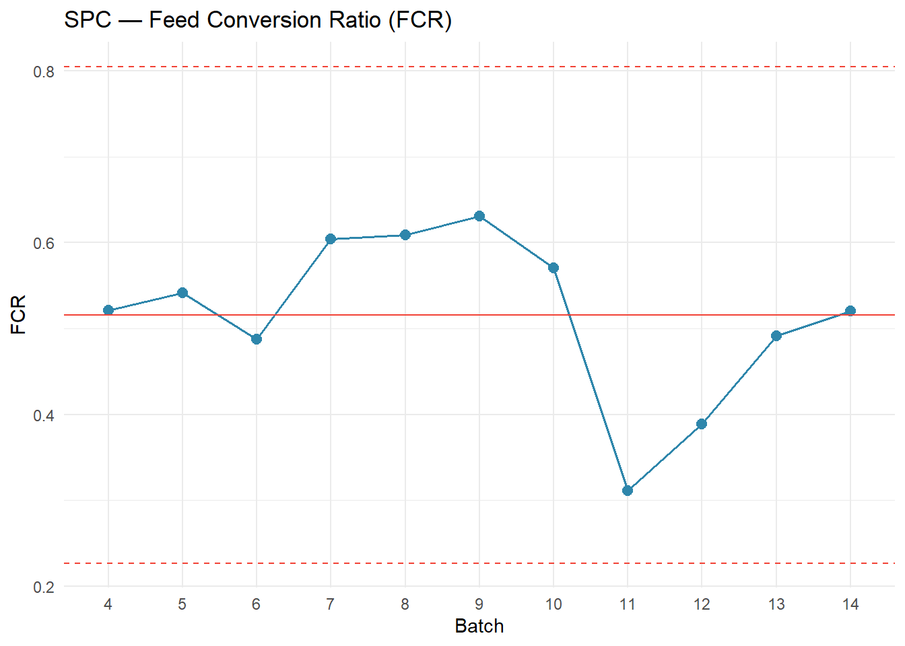
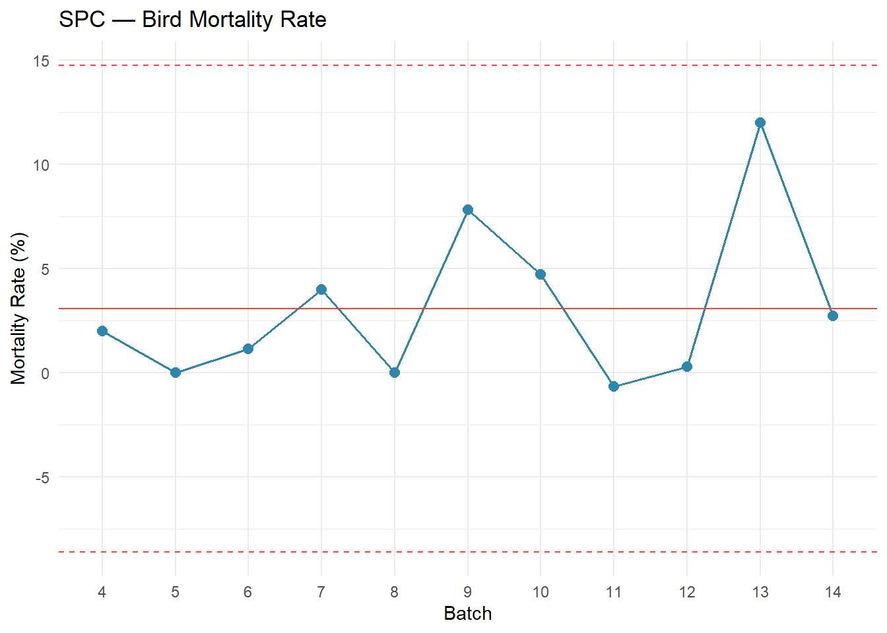

| Financial Performance Summary — Batches 4 to 14 | |||||||
|---|---|---|---|---|---|---|---|
| Batch | Revenue (UGX) | Cost of Production (UGX) | Net Profit (UGX) | Profit per Bird (UGX) | Profit Margin (%) | Cost per Bird (UGX) | Avg Sale Price (UGX) |
| 4 | 3,444,000 | 3,114,000 | 330,000 | 1,347 | 9.6 | 12,710 | 14,057 |
| 5 | 2,695,500 | 2,417,000 | 278,500 | 1,392 | 10.3 | 12,085 | 13,478 |
| 6 | 4,502,500 | 3,877,700 | 624,800 | 1,806 | 13.9 | 11,207 | 13,013 |
| 7 | 4,867,000 | 4,525,500 | 341,500 | 1,016 | 7.0 | 13,469 | 14,485 |
| 8 | 4,116,000 | 3,965,500 | 150,500 | 502 | 3.7 | 13,218 | 13,720 |
| 9 | 7,403,500 | 6,928,000 | 475,500 | 860 | 6.4 | 12,528 | 13,388 |
| 10 | 8,095,000 | 7,616,500 | 478,500 | 717 | 5.9 | 11,419 | 12,136 |
| 11 | 3,895,000 | 3,020,200 | 874,800 | 2,897 | 22.5 | 10,001 | 12,897 |
| 12 | 4,684,000 | 3,543,600 | 1,140,400 | 3,268 | 24.3 | 10,154 | 13,421 |
| 13 | 4,298,500 | 4,000,000 | 298,500 | 848 | 6.9 | 11,364 | 12,212 |
| 14 | 4,741,000 | 4,362,100 | 378,900 | 974 | 8.0 | 11,214 | 12,188 |
JC Farms — Trends (Batches 4–14)
Executive Summary (Batches 4–14)
This report analyzes financial and operational performance across 11 production cycles. Our findings identify cost management as the primary profit driver, with margins ranging significantly across batches. The data reveals clear opportunities for operational improvement and cost standardization.
Bird Production Efficiency
A critical operational metric is bird health and survival through the production cycle. The table below tracks birds at each stage: those purchased at the start of the batch, those sold at harvest, and the implied mortality loss during rearing and production.
| Bird Production Summary — Batches 4 to 14 | ||||
|---|---|---|---|---|
| Batch | Birds Purchased | Birds Sold | Birds Lost (Mortality) | Mortality Rate (%) |
| 4 | 250 | 245 | 5 | 2.0 |
| 5 | 200 | 200 | 0 | 0.0 |
| 6 | 350 | 346 | 4 | 1.1 |
| 7 | 350 | 336 | 14 | 4.0 |
| 8 | 300 | 300 | 0 | 0.0 |
| 9 | 600 | 553 | 47 | 7.8 |
| 10 | 700 | 667 | 33 | 4.7 |
| 11 | 300 | 302 | −2 | −0.7 |
| 12 | 350 | 349 | 1 | 0.3 |
| 13 | 400 | 352 | 48 | 12.0 |
| 14 | 400 | 389 | 11 | 2.8 |
Performance Drivers & Operational Insights
Our analysis of Batches 4–14 reveals three critical performance drivers:
1. Profit Margin (Profitability) — The primary indicator of business viability. This metric isolates how much profit remains after all production costs. A margin below 15% signals cost pressures that require intervention. Margins above 20% represent healthy, sustainable operations.
2. Cost Per Bird (Operational Efficiency) — A leading indicator of production discipline. Controlling feed quality, chick mortality, disease losses, and operational waste is essential. Volatility in this metric often precedes margin compression and signals process inconsistency.
3. Average Sale Price (Market Positioning) — Reflects both market conditions and customer mix. Declining prices require offsetting cost reductions; static prices demand efficiency gains. Price stability enables clearer accountability for cost management.
Statistical Process Control Charts
The charts below display each batch’s performance against its statistical mean (red solid line) and control limits (dashed red lines at ±3 standard deviations). Points outside the control limits signal exceptional performance or production anomalies warranting investigation. The SPC methodology helps distinguish normal variation from signals that require corrective action.
Warning: Using `size` aesthetic for lines was deprecated in ggplot2 3.4.0.
ℹ Please use `linewidth` instead.




Key Findings & Recommended Actions
1. Profit Margin Trajectory
- Finding: Margins reveal batch-to-batch variability that correlates strongly with cost management discipline.
- Implication: Unlike market-driven businesses, JC Farms controls ~85% of its margin through operational execution.
- Action: Establish a monthly margin target of 20%+. Investigate immediately any batch falling below 15%. Root-cause analysis should focus on feed costs, chick sourcing quality, and bird mortality during rearing.
2. Cost Per Bird — The Primary Profit Lever
- Finding: Cost per bird shows the widest variance across batches, indicating inconsistent procurement or operational standards.
- Implication: A 10% reduction in cost per bird translates directly to ~5–7% margin improvement, assuming stable pricing. This is the fastest path to profitability.
- Action: Benchmark top performers (lowest-cost batches) and standardize their procurement and logistics practices across all batches. Consider volume consolidation with feed suppliers and explore alternative feed formulations.
3. Sale Price Stability
- Finding: Price variation reflects market conditions and customer mix. Stable pricing enables clearer cost accountability.
- Implication: Where price variation is high (>10% month-to-month), operational teams may prioritize cost cutting over quality, leading to hidden losses in bird health and mortality.
- Action: Implement a simple pricing framework pegged to market conditions + 5–10% margin buffer. This removes uncertainty and clarifies profit accountability to the operations team.
Recommended Path Forward
Immediate (Week 1-2): - Establish a weekly performance dashboard tracking margin, cost per bird, sale price, and mortality rate vs. targets - Set clear targets: Margin ≥20%, Cost/Bird ≤X, Price ≥Y, Mortality ≤4% - Assign one team member to daily health monitoring and recording
Short-term (Week 2-4): - Conduct a detailed cost audit of the 3 batches with highest cost per bird - Investigate the 3 batches with highest mortality rates; document findings - Identify and eliminate process gaps through side-by-side comparison - Review biosecurity practices vs. industry standards (temperature, humidity, stocking density, disease protocols)
Medium-term (Month 2-3): - Pilot standardized procurement, feeding, and bird health protocols in one batch - Measure outcomes (mortality rate, cost per bird, profit margin) vs. control batch - Document and scale successful practices - Conduct staff training on early disease detection and response
Ongoing: - Monitor SPC charts weekly when new batch data becomes available - Escalate any batch with margin < 10%, cost/bird > previous period average, or mortality > 5% - Review correlation between cost discipline and bird health metrics monthly - Share performance wins and lessons learned across the operations team
Report Generated: December 29, 2025 — JC Farms Financial & Operational Analytics
Methodology: Shewhart SPC with ±3σ control limits | Data Period: Batches 4–14